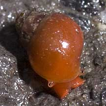
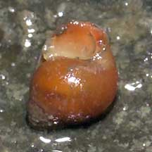
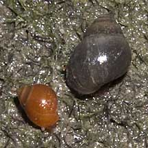
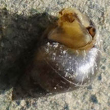

|
|
| shelled snails text index | photo index |
| Phylum Mollusca > Class Gastropoda |
| Red
berry snail Assiminea sp. Family Assimineidae updated Jul 2020 Where seen? This tiny bright red round snail is commonly seen in groups on the surface of the mud in some of our back mangroves. Features: 0.5-0.8cm. Shell thin, smooth and spherical. Colour bright red, sometimes black. Operculum thin. The body is red too, with tiny eyes on short stumpy stalks. It breathes air through a lung (instead of through gills like most other marine snails). Many members of the Family Assimineidae are adapted to brackish waters. What does it eat? It probably grazes on the algae growing on mangrove mud. |
 Lim Chu Kang, Jan 04 |
 Underside and operculum. Lim Chu Kang, Aug 05 |
 Sungei Buloh Besar, Apr 11 |
 |
| Red berry snails on Singapore shores |
On wildsingapore
flickr
|
| Other sightings on Singapore shores |
 |
| Family
Assimineidae recorded for Singapore from Tan Siong Kiat and Henrietta P. M. Woo, 2010 Preliminary Checklist of The Molluscs of Singapore. +Other additions (Singapore Biodiversity Records, etc)
|
|
Links
References
|